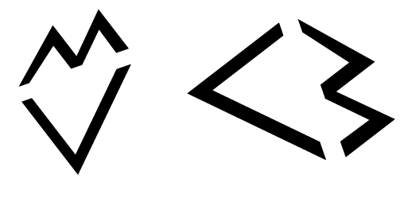
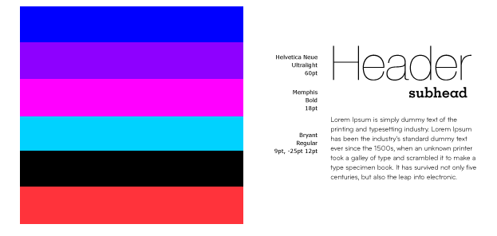
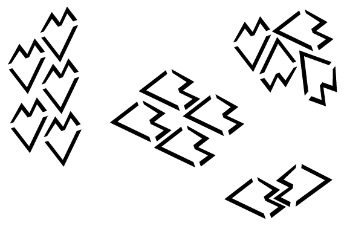
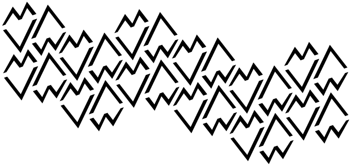

#museum is a museum of modern language. it shows the history and exploration of emoticons, internet slang, and words that have developed over time based on new technologies. the museum not only portrays this new language in america, but also in other languages and cultures.
examples of western emoticons: =) :) :P 8) :D :(
examples of eastern emoticons: (-_-)zzz m(_ _)m (=_=)
internet slang: haha in english, jaja in spanish, ח ח ח ח ח in hebrew, etc. lol, ttyl, omg
words that evolved as a result of new technologies: english-texting, selfie, twerk; spanish-chat, sms; french-texter, plan cul (booty call)
visual language is based off of the right triangle and makes a heart using the idea of the internet heart. type will be all lowercase and will use the same slang words that are on display in the museum.


